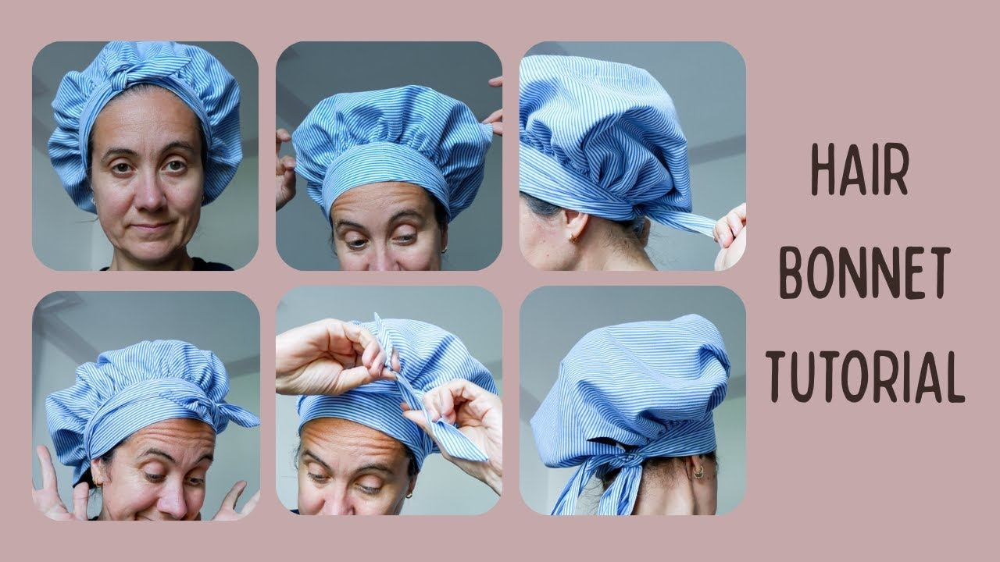

Bonnet vs Durag Overnight: Which One Should Guard Your Hair?
Every night, your hair needs a guard — against friction, dryness, and the slow chaos of a pillow. The two candidates are the durag and the bonnet, and they are not interchangeable: one compresses and shapes, the other shelters and preserves. MadamSew's (@MadamSew) video below shows what a proper satin bonnet actually is, constructed piece by piece. This guide compares the two honestly, hair goal by hair goal, so tonight's choice is a decision instead of a habit.
What each one actually does overnight
A durag presses hair flat in chosen directions. Overnight, that pressure is training — it is why wavers sleep in one. But pressure is also a cost: hair that needs volume, curl definition, or room — braids, twists, long locs, a fresh blowout — gets flattened or creased by the same force that builds waves.
A bonnet does not press; it encloses. Hair rests inside a satin-lined space, protected from friction and moisture loss, keeping the shape it already has. A bonnet preserves styles. It cannot train a pattern, because preservation and pressure are opposites — and that single fact decides most of this comparison.
Choose by tonight's goal
Training waves, holding a wrap set flat, keeping a silk press straight: durag. Its compression is the point. Protecting braids, twists, locs, curls, or any style with volume: bonnet. Its room is the point.
Some heads need both systems on different nights — a waver growing out into twists might durag on training nights and bonnet between styles. And the layered play exists here too: a durag for shaping with a bonnet over everything is a legitimate setup for people whose durag ties slip — the bonnet acts as the guard that keeps the tie home.
The fabric rule both share
Whatever you choose, the fabric touching your hair should be satin or silk-smooth. Cotton absorbs moisture and grips — the two things overnight hair protection exists to prevent. A cotton-lined anything is working against you all night, however good the shape.
Judge your current setup by the morning evidence: hair that wakes dry, frizzy at the edges, or creased where it should not be is telling you the guard is wrong — wrong tool, wrong fabric, or wrong fit. Change one variable, sleep, and read the result. The right overnight guard makes mornings boring, and boring mornings are the goal.
A word for the indecisive: own both and let the calendar decide. Training blocks get the durag, style-protection weeks get the bonnet, and you stop forcing one tool to do two opposite jobs. The right guard on the right night beats loyalty to either — your hair can tell the difference even when the mirror is forgiving.
Watch: what a proper satin bonnet is and how it's made — MadamSew builds one from scratch
Video: “Make this roomy, comfortable, satin-lined hair bonnet with me!” by MadamSew (@MadamSew) · Watch on YouTube
Shop the gear
Everything in this guide runs on the right gear: a durag that holds compression without slipping, a cap that stays put, and fabric that treats your hair right. The durag.store launch lineup is built to that standard — dual-layer construction, long tails, and stitching made to survive the routine. Join the launch list and use code GOLDSTANDARD for 15% off your first order.
Keep learning
- Non-Slip Bonnets: Why Yours Falls Off and How to Fix It for Good — Basic · Bonnets
- How to Wear a Bonnet Correctly: Fit, Band Placement, and Hair Prep — Basic · Bonnets
- Bonnet Care: Washing, Drying and Storing Satin Bonnets So They Last — Basic · Bonnets
Sources: Video — “Make this roomy, comfortable, satin-lined hair bonnet with me!” by MadamSew (@MadamSew), youtube.com. Guide written by the durag.store Wave Lab.